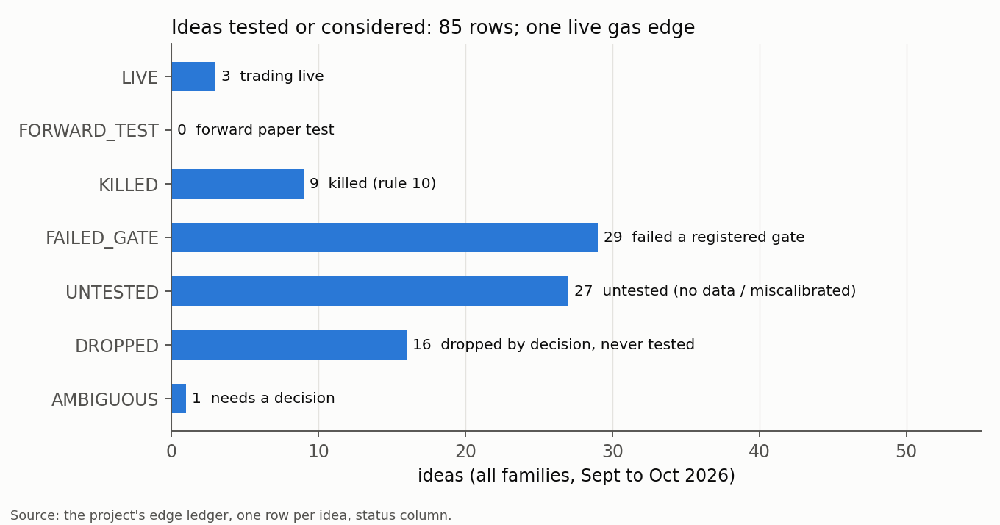

The problem
Kalshi lists a ladder of contracts each day, each asking whether the AAA national gas average will be above a set price tomorrow. Many ideas for trading that ladder look plausible on paper. The question was which, if any, survive a test written before the result is known.
The project logged 85 strategy ideas. 38 were killed or failed a pre-registered gate. Most of the failures taught more than the one edge that worked.
The approach
In the last hours before the 11:59 PM ET close, buyers of YES pay more than those contracts turn out to be worth on average. The system posts resting offers to sell YES at those prices. About 72% of the contracts it sold settled NO, so the offer kept its premium. It never takes the other side's price, and every result is measured after Kalshi's taker fee.
Every idea goes through the same gates
- Write the rule first. Hypothesis, data split, statistics and pass/fail threshold are committed before any result is computed.
- Backtest on history the rule was not tuned on.
- Forward paper test on live market data, with a stop rule fixed in advance.
- Go live small. Money goes in only after a paper pass, at minimum size.
- A failed gate is a failure. Thresholds are never moved after a result is known.
Pipeline
Public Kalshi market data (markets, trades, order books) → backfill and settlement reconstruction → backtest maker simulator → pre-registered rules and gates → forward paper test (records what a resting order would do) → settlement and ledger in cents per contract. A live trial ran alongside the paper test; its code is private.
Results
All figures are cents per contract after Kalshi's taker fee. The full detail is in the repository's RESULTS.md.
| Stage | Sample | Result | 95% interval |
|---|---|---|---|
| Backtest, pre-registered benchmark | 14,213 simulated fills, 67 days | +10.10¢ | [+4.18, +16.07]* |
| Forward paper test | 3,270 simulated fills, 12 evenings | +16.94¢ | [+4.75, +27.85] |
* The pre-registered interval was [+4.28, +16.15]. A fresh bootstrap on the stored simulation gives the interval shown here. The paper interval is a date-level bootstrap, resampling whole evenings rather than fills.
- Paper fills that were profitable: 72.1%
- Paper evenings that were positive: 8 of 12
- Ideas tested: 85 logged; 38 killed or failed a pre-registered gate
Read with care. Paper results are simulated against recorded order books, not real execution, so they can overstate live results. Twelve evenings is a small sample, which is why the paper interval is wide. Live results are private and are not claimed here.
By hour of fill (Eastern time), paper, 12 evenings
| Hour | Fills | Cents per contract |
|---|---|---|
| 18:00 | 301 | +13.04 |
| 19:00 | 337 | +15.01 |
| 20:00 | 450 | +16.75 |
| 21:00 | 507 | +14.81 |
| 22:00 | 706 | +15.28 |
| 23:00 | 969 | +21.25 |
Every hour is positive. The 23:00 hour, nearest the market's close, earns the most.


Journey
- Sep 16, 2026Kill rule registered before the first paper quote; paper test starts. Setup
- Sep 17, 2026Survey finds that the evening edge exists on no other daily Kalshi market. Finding
- Sep 22, 2026A model built on wholesale gasoline (RBOB) prices lost to the market's own pricing at every time of day checked. Refuted. Setback
- Sep 24, 2026First live night, at minimum size. Milestone
- Sep 26, 2026A floating-point rounding error had halted live trading on night three. Fixed with exact decimal arithmetic. Fixed
- Sep 27–29, 2026Filter, capital-cap, start-time and state-market studies: nothing passes confirmation. Setback
- Sep 28, 2026Live trading pre-registered to mirror the paper strategy exactly. Decision
- Oct 16, 2026Sister market (diesel) passes its first live gate: +4.19¢ over 323 fills. Win
- Oct 21, 2026Full scan of daily markets: no second gas-like edge exists. Finding
- Oct 26, 2026Research stack retired; project narrowed to gas and diesel. Decision
- Oct 29, 2026Live trading paused. Decision
What I learned
- Rank ideas by what they earn at settlement, not by bid-ask spread. Screening on spread would have thrown away the one edge that worked.
- An observed trade is not a fill. The backtest simulates whether a resting order could actually have been filled, which changed several results.
- Resample by day, not by trade. Trades on the same day move together; treating them as independent makes results look far more certain than they are.
- Both halves must agree. A result that is positive overall but negative in one half of the data is not an edge.
- Check the plumbing. A ledger bug silently skipped compressed data files, and a floating-point rounding error halted live trading. Both were caught and fixed, and every headline number was re-checked against raw files.
How it was built
I designed the strategy, the experiments and the pass/fail rules, and reviewed every result against the raw data. The code was written with AI coding tools (Claude Code, Cursor).
The repository holds research code only, copied from the private project. Live execution code, the dashboard, deployment configuration and live data are private. To check the method, run python scripts/reproduce_headline.py. It applies the same P&L method to five evenings of public sample data. The 12-evening headline needs the complete tape, which is not published.